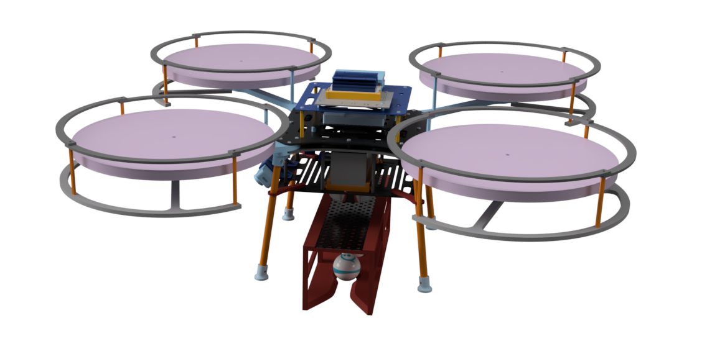

Projects
Arduino R4 Controller Web Interface
A web-based interface hosted on an Arduino R4 WiFi board, enabling remote control of multiple servos and electromagnets. Users can access the control panel over WiFi without additional apps, operate servos individually or simultaneously, control electromagnets, and view real-time statuses—all through a stylish and user-friendly layout.
AVR Drone
Led the development of an autonomous drone for the Bell Advanced Vertical Robotics Competition. Utilized A* pathfinding to navigate complex environments, pushing the boundaries of autonomous flight and showcasing innovative engineering solutions.
Iron Man Helmet

Designed and built a functional Iron Man helmet using 3D printing and electronics. This project combined engineering and creativity to bring a piece of fictional technology into the real world, complete with moving parts and lighting effects.